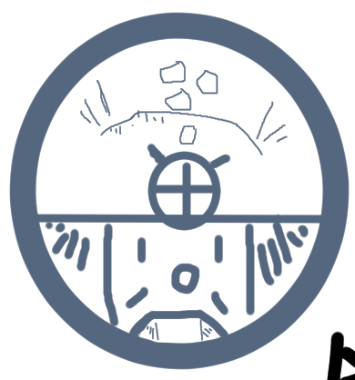
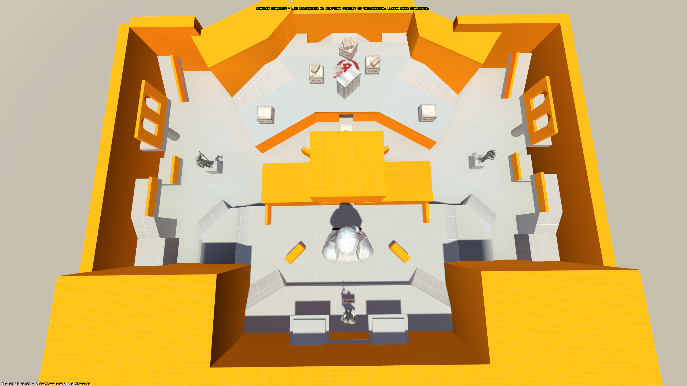
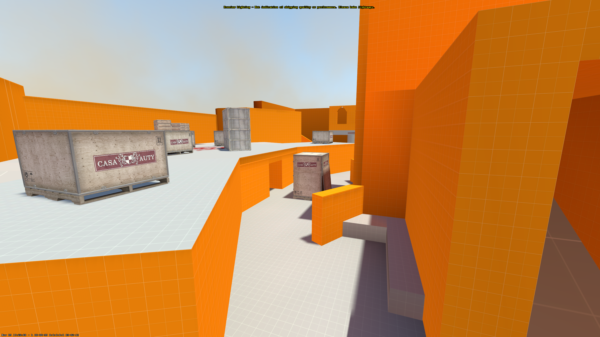
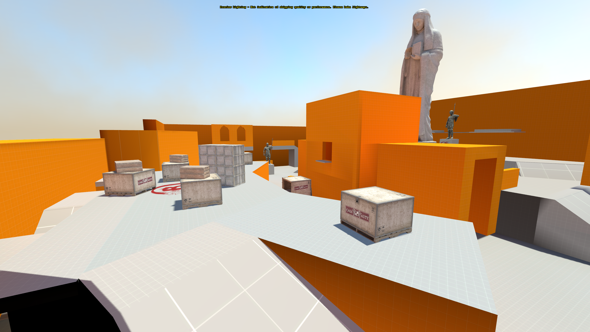

Project Overview
After playing some Gunfight (2v2) in Call of Duty I wanted to make something similar for the newly released Counter-Strike 2! It was intended as a simple aim map, but during playtesting the idea to add bombsites
for a custom "blitz" defusal mode popped up and was implemented, making the map its own mix between aim and Wingman.
When sketching the layout I wanted to have several distinct arenas. I varied them by changing the range between the opposing players at the
chokepoints and varying if the main cover was placed centrally or closer to the player spawn points, how players approach either other with verticality and the area's connection to other lanes. You can see the first sketch followed by the most recent topview below.


The map has four lanes, which was intended to vary gameplay in 1v1 and 2v2 since player would not always directly face each other in their chosen lanes. This opened up the map to be used as a whole, unlike traditional 1v1 maps for CS.
To make sure flow was not affected by the four lane structure, the underpass lane in the middle was deliberately lower than the middle tower and connecting "boxes" lane. The central cover of the underpass was also used to connect the "boxes" lane with the tower,
by allowing players to jump onto it and onto the the next lane.


During playtesting I noticed that the underpass was used less than the other lanes. To make the lane more attractive, I added a "cave" area underneath the "boxes" lane connecting with the underpass. This led to players using the lane more often,
seemingly since they were nolonger as boxed in as they were without the cave.
As of writing this I have made and playtested six versions, using bots for inital tests and then playtesting with friends and strangers.